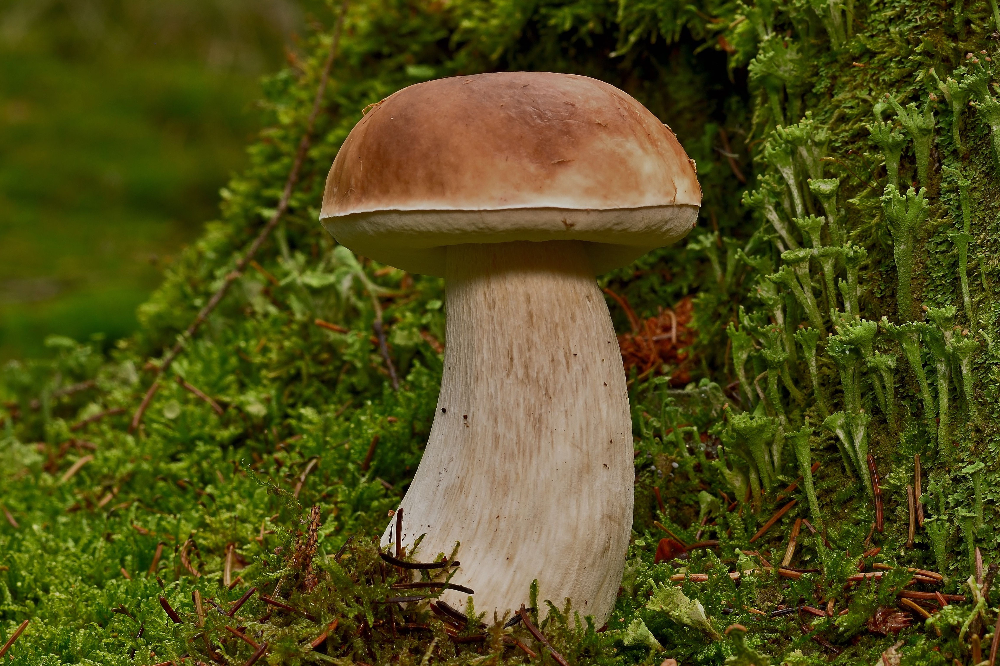
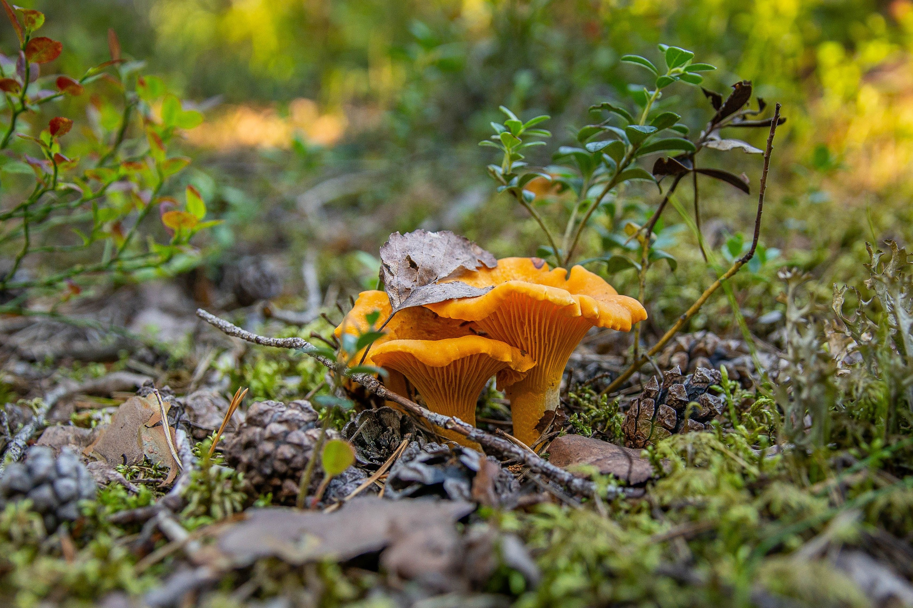
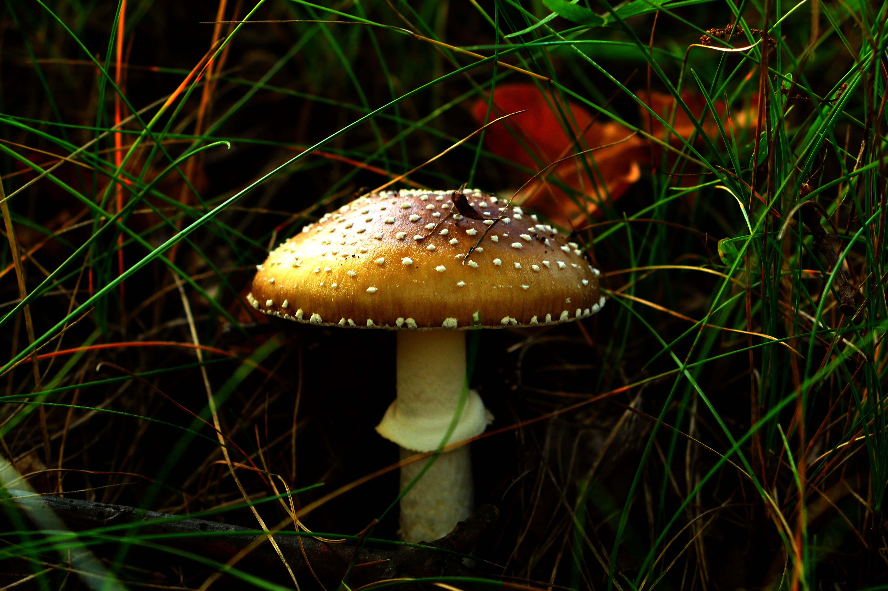

Die Pilze werden gesammelt.
Parasole
Riesenschirmling, Riesenschirmpilz, Paukenschläger, ...

Steinpilz
Gemeiner Steinpilz, Fichtensteinpilz, Pilftling, ...

Echter Pfifferling
Eierschwamm, Rehgeiserl, Reherl...

Pantherpilz
Pantherwulstling, Krötenstuhl, Paddenstuhl, ...